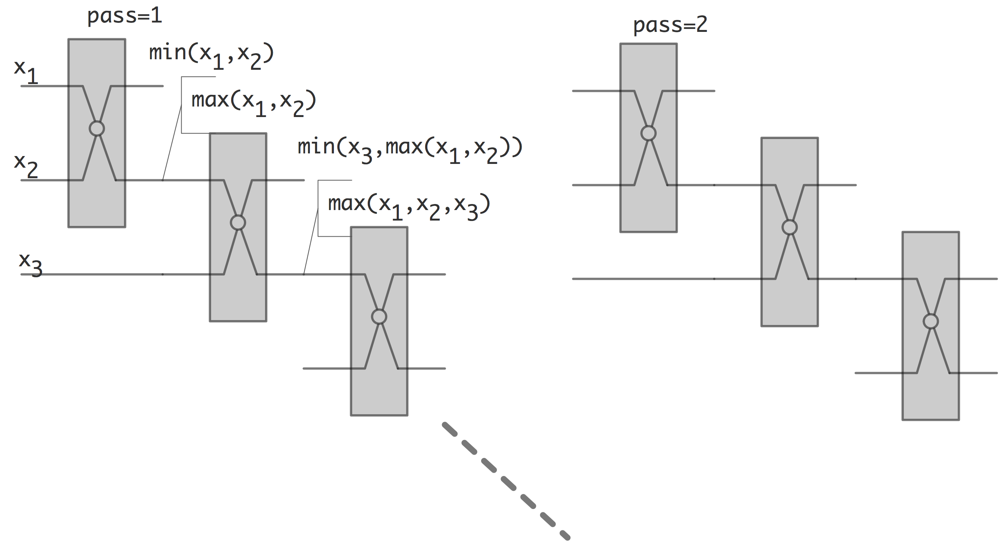
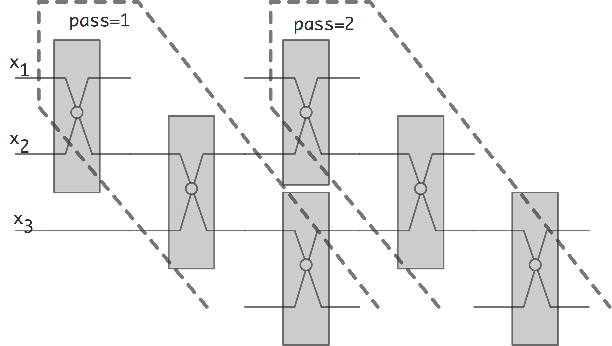
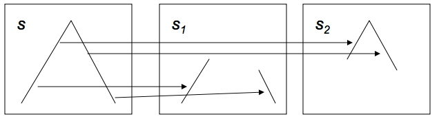
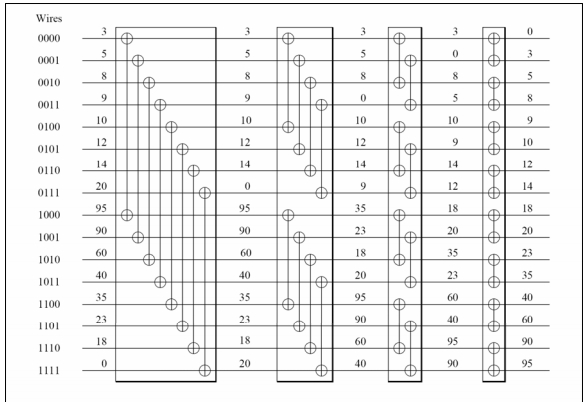

Sorting is not a common operation in scientific computing: one expects it to be more important in databases, whether these be financial or biological (for instance in sequence alignment). However, it sometimes comes up, for instance in AMR and other applications where significant manipulations of data structures occurs.
In this section we will briefly look at some basic algorithms and how they can be done in parallel. For more details, see~ [Kumar:parcomp-book] and the references therein.
crumb trail: > sorting > Brief introduction to sorting
crumb trail: > sorting > Brief introduction to sorting > Complexity
There are many sorting algorithms. Traditionally, they have been distinguished by their computational complexity, that is, given an array of $n$ elements, how many operations does it take to sort them, as a function of~$n$.
Theoretically one can show that a sorting algorithm has to have at least complexity~$O(n\log n)$\footnote{One can consider a sorting algorithm as a decision tree: a first comparison is made, depending on it two other comparisons are made, et cetera. Thus, an actual sorting becomes a path through this decision tree. If every path has running time~$h$, the tree has $2^h$ nodes. Since a sequence of $n$ elements can be ordered in $n!$ ways, the tree needs to have enough paths to accomodate all of these; in other words, $2^h\geq n!$. Using Stirling's formula, this means that $n\geq O(n\log n)$}. There are indeed several algorithms that are guaranteed to attain this complexity, but a very popular algorithm, called Quicksort has only an `expected' complexity of~$O(n\log n)$, and a worst case complexity of~$O(n^2)$. This behaviour results from the fact that quicksort needs to choose `pivot elements' (we will go into more detail below in section~ 8.3 ), and if these choices are consistently the worst possible, the optimal complexity is not reached.
\While{the input array has length~$>1$}{ Find a pivot element of intermediate size\; Split the array in two, based on the pivot\
Sort the two arrays. } \caption{The quicksort algorithm}On the other hand, the very simple bubble sort algorithm always has the same complexity, since it has a static structure:
\For{$\mathit{pass}$ from $1$ to $n-1$}{ \For{$e$ from 1 to $n-\mathit{pass}$}{ \If{elements $e$ and $e+1$ are ordered the wrong way}{exchange them} } } \caption{The bubble sort algorithm}It is easy to see that this algorithm has a complexity of~$O(n^2)$: the inner loop does $t$ comparisons and up to $t$ exchanges. Summing this from $1$ to $n-1$ gives approximately $n^2/2$ comparisons and at most the same number of exchanges.
crumb trail: > sorting > Brief introduction to sorting > Sorting networks
Above we saw that some sorting algorithms operate independently of the actual input data, and some make decisions based on that data. The former class is sometimes called sorting network . It can be considered as custom hardware that implements just one algorithm. The basic hardware element is the compare-and-swap element, which has two inputs and two outputs. For two inputs $x,y$ the outputs are $\max(x,y)$ and $\min(x,y)$.
In figure~ 8.1 we show buble sort, built up
FIGURE 8.1: Bubble sort as a sorting network
out of compare and swap elements.
Below we will consider the Bitonic sort algorithm as a prime example of a sorting network.
crumb trail: > sorting > Brief introduction to sorting > Parallel complexity
Above we remarked that sorting sequentially takes at least $O(N\log N)$ time. If we can have perfect speedup, using for simplicity $P=N$ processors, we would have parallel time~$O(\log N)$. If the parallel time is more than that, we define the
as the total number of operations over all processors.
This equals the number of operations if the parallel algorithm were executed by one process, emulating all the others. Ideally this would be the same as the number of operations for a single-process algorithm, but it need not be. If it is larger, we have found another source of overhead: an intrinsic penalty for using a parallel algorithm.
For instance, below we will see that sorting algorithm often have a sequential complexity of $O(N\log^2N)$.
crumb trail: > sorting > Odd-even transposition sort
Taking another look at figure~ 8.1 , you see that the second pass
FIGURE 8.2: Overlapping passes in the bubble sort network
can actually be started long before the first pass is totally finished. This is illustrated in figure~ 8.2 . If we now look at what happens at any given time, we obtain the odd-even transposition sort
Odd-even transposition sort is a simple parallel sorting algorithm, with as main virtue that it is relatively easy to implement on a linear area of processors. On the other hand, it is not particularly efficient.
A~single step of the algorithm consists of two substeps:
After $N/$ steps, each consisting of the two substeps just given, a sequency is sorted. In each triplet $2i,2i+1,2i+2$, after an even and an odd step the largest element will be in rightmost position. Proceed by induction.
With a parallel time of $N$, this gives a sequential complexity~$N^2$ compare-and-swap operations.
Discuss speedup and efficiency of swap sort, where we sort $N$ numbers of $P$ processors; for simplicity we set $N=P$ so that each processor contains a single number. Express execution time in compare-and-swap operations.
crumb trail: > sorting > Quicksort
Quicksort is a recursive algorithm, that, unlike bubble sort, is not deterministic. It is a two step procedure, based on a reordering of the sequence\footnote{The name is explained by its origin with the Dutch computer scientist Edsger Dijkstra; see http://en.wikipedia.org/wiki/Dutch_national_flag_problem .}:
\TitleOfAlgo{Dutch National Flag ordering of an array} \Input{An array of elements, and a `pivot' value} \Output{The input array with elements ordered as red-white-blue, where red elements are larger than the pivot, white elements are equal to the pivot, and blue elements are less than the pivot}We state without proof that this can be done in $O(n)$ operations. With this, quicksort becomes:
\TitleOfAlgo{Quicksort} \Input{An array of elements} \Output{The input array, sorted} \While{The array is longer than one element}{ pick an arbitrary value as pivot \; apply the Dutch National Flag reordering to this array \; Quicksort( the blue elements ) \; Quicksort( the red elements ) \
}The indeterminacy of this algorithm, and the variance in its complexity, stems from the pivot choice. In the worst case, the pivot is always the (unique) smallest element of the array. There will then be no blue elements, the only white element is the pivot, and the recursive call will be on the array of $n-1$ red elements. It is easy to see that the running time will then be~$O(n^2)$. On the other hand, if the pivot is always (close to) the median, that is, the element that is intermediate in size, then the recursive calls will have an about equal running time, and we get a recursive formula for the running time: \[ T_n = 2T_{n/2} + O(n) \] which is (again without proof) $O(n\log n)$.
We will now consider parallel implementations of quicksort.
crumb trail: > sorting > Quicksort > Quicksort in shared memory
A simple parallelization of the quicksort algorithm can be achieved by executing the two recursive calls in parallel. This is easiest realized with a shared memory model, and threads (section~ 2.6.1 ) for the recursive calls. However, this implementation is not efficient.
On an array of length~$n$, and with perfect pivot choice, there will be $n$~threads active in the final stage of the algorithm. Optimally, we would want a parallel algorithm to run in $O(\log n)$ time, but here the time is dominated by the initial reordering of the array by the first thread.
Make this argument precise. What is the total running time, the speedup, and the efficiency of parallelizing the quicksort algorithm this way?
Is there a way to make splitting the array more efficient?
As it turns out, yes, and the key is to use a parallel
operation}; see appendix~
app:prefix
. If the array of values
is $x_1,\ldots,x_n$, we use a parallel prefix to compute
how many elements are less than the pivot~$\pi$:
\[
X_i=\#\{ x_j\colon j
This shows that each pivoting step can be done in $O(\log n)$ time,
and since there $\log n$ steps to the sorting algorithm, the
total algorithm runs in $O((\log n)^2)$ time.
The
$(\log_2N)^2$.
crumb trail: > sorting > Quicksort > Quicksort on a hypercube
8.3.2 Quicksort on a hypercube
As was apparent from the previous section, for an efficient parallelization of the quicksort algorithm, we need to make the Dutch National Flag reordering parallel too. Let us then assume that the array has been partitioned over the $p$ processors of a hypercube of dimension~$d$ (meaning that $p=2^d$).
In the first step of the parallel algorithm, we choose a pivot, and broadcast it to all processors. All processors will then apply the reordering independently on their local data.
In order to bring together the red and blue elements in this first level, every processor is now paired up with one that has a binary address that is the same in every bit but the most significant one. In each pair, the blue elements are sent to the processor that has a 1~value in that bit; the red elements go to the processor that has a 0~value in that bit.
After this exchange (which is local, and therefore fully parallel), the processors with an address $1xxxxx$ have all the red elements, and the processors with an address $0xxxxx$ have all the blue elements. The previous steps can now be repeated on the subcubes.
This algorithm keeps all processors working in every step; however, it is susceptible to load imbalance if the chosen pivots are far from the median. Moreover, this load imbalance is not lessened during the sort process.
crumb trail: > sorting > Quicksort > Quicksort on a general parallel processor
Quicksort can also be done on any parallel machine that has a linear ordering of the processors. We assume at first that every processor holds exactly one array element, and, because of the flag reordering, sorting will always involve a consecutive set of processors.
Parallel quicksort of an array (or subarray in a recursive call) starts by constructing a binary tree on the processors storing the array. A~pivot value is chosen and broadcast through the tree. The tree structure is then used to count on each processor how many elements in the left and right subtree are less than, equal to, or more than the pivot value.
With this information, the root processor can compute where the red/white/blue regions are going to be stored. This information is sent down the tree, and every subtree computes the target locations for the elements in its subtree.
If we ignore network contention, the reordering can now be done in unit time, since each processor sends at most one element. This means that each stage only takes time in summing the number of blue and red elements in the subtrees, which is $O(\log n)$ on the top level, $O(\log n/2)$~on the next, et cetera. This makes for almost perfect speedup.
crumb trail: > sorting > Radixsort
Most sorting algorithms are based on comparing the full item value. By contrast, radix sort does a number of partial sorting stages on the digits of the number. For each digit value a `bin' is allocated, and numbers are moved into these bins. Concatenating these bins gives a partially sorted array, and by moving through the digit positions, the array gets increasingly sorted.
Consider an example with number of at most two digits, so two stages are needed:
| array | 25 | 52 | 71 | 12 |
| last digit | 5 | 2 | 1 | 2 |
| (only bins 1,2,5 receive data) | ||||
| sorted | 71 | 52 | 12 | 25 |
| next digit | 7 | 5 | 1 | 2 |
| sorted | 12 | 25 | 52 | 71 |
It is important that the partial ordering of one stage is preserved during the next. Inductively we then arrive at a totally sorted array in the end.
crumb trail: > sorting > Radixsort > Parallel radix sort
A distributed memory sorting algorithm already has an obvious `binning' of the data, so a natural parallel implementation of radix sort is based on using~$P$, the number of processes, as radix.
We illustrate this with an example on two processors, meaning that we look at binary representations of the values.
| proc0 | proc0 | ||||
| array | 2 | 5 | 7 | 1 | |
| binary | 010 | 101 | 111 | 001 | |
| stage 1: sort by least significant bit | |||||
| last digit | $\hphantom{00}0$ | $\hphantom{00}1$ | $\hphantom{00}1$ | $\hphantom{00}1$ | |
| (this serves as bin number) | |||||
| sorted | 010 | 101 | 111 | 001 | |
| stage 2: sort by middle bit | |||||
| next digit | $\hphantom{0}1 $ | $\hphantom{0}0 $ | $\hphantom{0}1 $ | $\hphantom{0}0$ | |
| (this serves as bin number) | |||||
| sorted | 101 | 001 | 010 | 111 | |
| stage 3: sort by most significant bit | |||||
| next digit | $\hphantom{}1 $ | $\hphantom{}0 $ | $\hphantom{}0 $ | $\hphantom{}1$ | |
| (this serves as bin number) | |||||
| sorted | 001 | 010 | 101 | 111 | |
| decimal | 1 | 2 | 5 | 7 | |
(We see that there can be load imbalance during the algorithm.)
Analysis:
crumb trail: > sorting > Radixsort > Radix sort by most significant digit
It is perfectly possible to let the stages of the radix sort progress from most to least significant digit, rather than the reverse. Sequentially this does not change anything of significance.
However,
The locality argument above was done somewhat hand-wavingly. Argue that the algorithm can be done in both a breadth-first and depth-first fashion. Discuss the relation of this distinction with the locality argument.
crumb trail: > sorting > Samplesort
You saw in Quicksort (section 8.3 ) that it is possible to use probabilistic elements in a sorting algorithm. We can extend the idea of picking a single pivot, as in Quicksort, to that of picking as many pivots as there are processors. Instead of a bisection of the elements, this divides the elements into as many `buckets' as there are processors. Each processor then sorts its elements fully in parallel.
Input: $p$: the number of processors, $N$: the numbers of elements to sort; $\{x\_i\}\_{i<N}$ the elements to sort} Let $x\_0=b\_0<b\_1<\cdots<b\_{p-1}<b\_p=x\_N$ (where $x\_N>x\_{N-1}$ arbitrary)\; \For { $i=0,…,p-1$ } { Let $s\_i=[b\_i,… b\_{i+1}-1]$ } \For { $i=0,…,p-1$ } { Assign the elements in $s\_i$ to processor $i$ } \For { $i=0,…,p-1$ in parallel } { Let processor $i$ sort its elements } \caption{The Samplesort algorithm
Clearly this algorithm can have severe load imbalance if the buckets are not chosen carefully. Randomly picking $p$ elements is probably not good enough; instead, some form of sampling of the elements is needed. Correspondingly, this algorithm is known as \textbf{Samplesort} [Blelloch:1991:CM2sort] .
While the sorting of the buckets, once assigned, is fully parallel, this algorithm still has some problems regarding parallelism. First of all, the sampling is a sequential bottleneck for the algorithm. Also, the step where buckets are assigned to processors is essentially an all-to-all operation,
For an analysis of this, assume that there are $P$ processes that first function as mappers, then as reducers. Let $N$ be the number of data points, and define a block size $b\equiv N/P$. The cost of the processing steps of the algorithm is:
However, the shuffle step is non-trivial. Unless the data is partially pre-sorted, we can expect the shuffle to be a full all-to-all , with a time complexity of $P\alpha+b\beta$. Also, this may become a network bottleneck. Note that in Quicksort on a hypercube there was never any contention for the wires.
Argue that for a small number of processes, $P\ll N$, this algorithm has perfect speedup and a sequential complexity (see above) of $N\log N$.Comparing this algorithm to sorting networks like bitonic sort this sorting algorithm looks considerable simpler: it has only a one-step network. The previous question argued that in the `optimistic scaling' (work can increase while keeping number of processors constant) the sequential complexity is the same as for the sequential algorithm. However, in the weak scaling analysis where we increase work and processors proportionally, the sequential complexity is considerably worse.
Consider the case where we scale both $N,P$, keeping $b$ constant. Argue that in this case the shuffle step introduces an $N^2$ term into the algorithm.
crumb trail: > sorting > Samplesort > Sorting through MapReduce
The terasort benchmark concerns sorting on a large file-based dataset. Thus, it is somewhat of a standard in big data systems. In particular, MapReduce is a prime candidate; see http://perspectives.mvdirona.com/2008/07/hadoop-wins-terasort/ .
Using MapReduce, the algorithm proceeds as follows:
We see that, modulo terminology changes, this is really samplesort.
crumb trail: > sorting > Bitonic sort
To motivate bitonic sorting, suppose a sequence $x=\langle x_0,…,x_n-1\rangle$ consists of an ascending followed by a descending part.
FIGURE 8.3: Illustration of a splitting a bitonic sequence
Now split this sequence into two subsequences of equal length defined by:
\begin{array}{cc} s\_1 = \langle \min\{x\_0,x\_{n/2}\},… \min\{ x\_{n/2-1},x\_{n-1}\}\\ s\_2 = \langle \max\{x\_0,x\_{n/2}\},… \max\{ x\_{n/2-1},x\_{n-1}\}\\ \end{array} \label{eq:bitonic-split} \end{equation}From the picture it is easy to see that $s_1,s_2$ are again sequences with an ascending and descending part. Moreover, all the elements in $s_1$ are less than all the elements in $s_2$.
We call \eqref{eq:bitonic-split} an ascending bitonic sorter, sinc the second subsequence contains elements larger than in the first. Likewise we can construct a descending sorter by reversing the roles of maximum and minimum.
It's not hard to imagine that this is a step in a sorting algorithm: starting out with a sequence on this form, recursive application of formula \eqref{eq:bitonic-split} gives a sorted sequence.
FIGURE 8.4: Illustration of a bitonic network that sorts a bitonic sequence of length 16
Figure 8.4 shows how 4 bitonic sorters, over distances 8,4,2,1 respectively, will sort a sequence of length 16.
The actual definition of a bitonic sequence is slightly more complicated. A sequence is bitonic if it conists of an ascending part followed by a descending part, or is a cyclic permutation of such a sequence.
Prove that splitting a bitonic sequence according to formula \eqref{eq:bitonic-split} gives two bitonic sequences.So the question is how to get a bitonic sequence. The answer is to use larger and larger bitonic networks.
FIGURE 8.5: Full bitonic sort for 16 elements
From this description you see that you $\log_2N$ stages to sort $N$ elements, where the $i$-th stage is of length $\log_2i$. This makes the total sequential complexity of bitonic sort $(\log_2N)^2$.
The sequence of operations in figure 8.5 is called a sorting network , built up out of simple compare-and-swap elements. There is no dependence on the value of the data elements, as is the case with quicksort.